Code
packages <- c(
'dagitty',
'ggdag',
'tidyverse'
)

Below is a step-by-step R tutorial that walks through a worked example of a Directed Acyclic Graph (DAG) and shows how it is used for causal reasoning and adjustment selection. The tutorial is written at a level suitable for biostatistics / epidemiology / applied statistics students, and fits naturally with regression and survival-analysis thinking.
DAGs are not statistical models—they are qualitative representations of causal assumptions grounded in domain knowledge. As Judea Pearl emphasized: “No causes in, no causes out.” DAGs make three critical contributions:
X → Y) asserts a direct causal effect; every missing arrow asserts no direct effect (often the stronger assumption)Core insight: DAGs translate causal questions into testable statistical strategies. They don’t replace domain expertise—they structure it.
The Core Concepts of DAGs:
| Concept | Definition | Causal Implication |
|---|---|---|
| Node | Variable (observed/latent) | Represents exposure, outcome, or covariate |
Directed edge (X → Y) |
Hypothesized direct causal effect | Assumption: X influences Y holding other causes constant |
| Backdoor path | Path from X to Y starting with ← into X |
Source of confounding bias if open |
Collider (X → C ← Y) |
Variable with two incoming arrows | Blocks association by default; conditioning opens spurious path |
Mediator (X → M → Y) |
On causal pathway | Adjusting blocks part of causal effect (overadjustment) |
| d-separation | Graphical criterion for conditional independence | Determines if path is blocked given conditioning set |
packages <- c(
'dagitty',
'ggdag',
'tidyverse'
)#| warning: false
#| error: false
# Install missing packages
new_packages <- packages[!(packages %in% installed.packages()[,"Package"])]
if(length(new_packages)) install.packages(new_packages)# Load packages with suppressed messages
invisible(lapply(packages, function(pkg) {
suppressPackageStartupMessages(library(pkg, character.only = TRUE))
}))# Check loaded packages
cat("Successfully loaded packages:\n")Successfully loaded packages: [1] "package:lubridate" "package:forcats" "package:stringr"
[4] "package:dplyr" "package:purrr" "package:readr"
[7] "package:tidyr" "package:tibble" "package:ggplot2"
[10] "package:tidyverse" "package:ggdag" "package:dagitty"
[13] "package:stats" "package:graphics" "package:grDevices"
[16] "package:utils" "package:datasets" "package:methods"
[19] "package:base" Scenario: Estimating effect of air pollution (X) on asthma incidence (Y), with socioeconomic status (C) as confounder.
Below we will create a simple DAG representing the relationships among pollution exposure (X), asthma outcome (Y), and socioeconomic status (C) as a confounder.
# Define DAG using dagitty syntax
dag_confound <- dagitty('
dag {
C [pos="1,1"]
X [exposure,pos="0,0"]
Y [outcome,pos="2,0"]
C -> X
C -> Y
X -> Y
}
')
# Visualize
ggdag(dag_confound, use_labels = "name") +
theme_dag() +
ggtitle("Simple Confounding DAG (Correct Syntax)")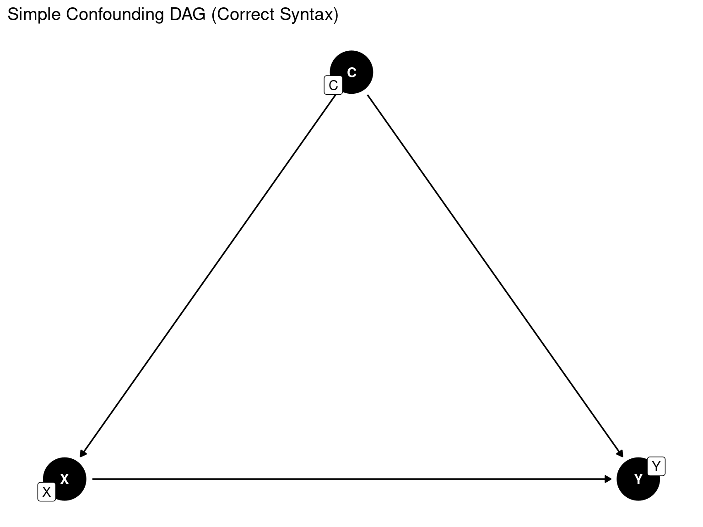
# ALTERNATIVE: More explicit control
ggdag_status(dag_confound) +
theme_dag() +
labs(title = "Confounding DAG: X → Y adjusted by C")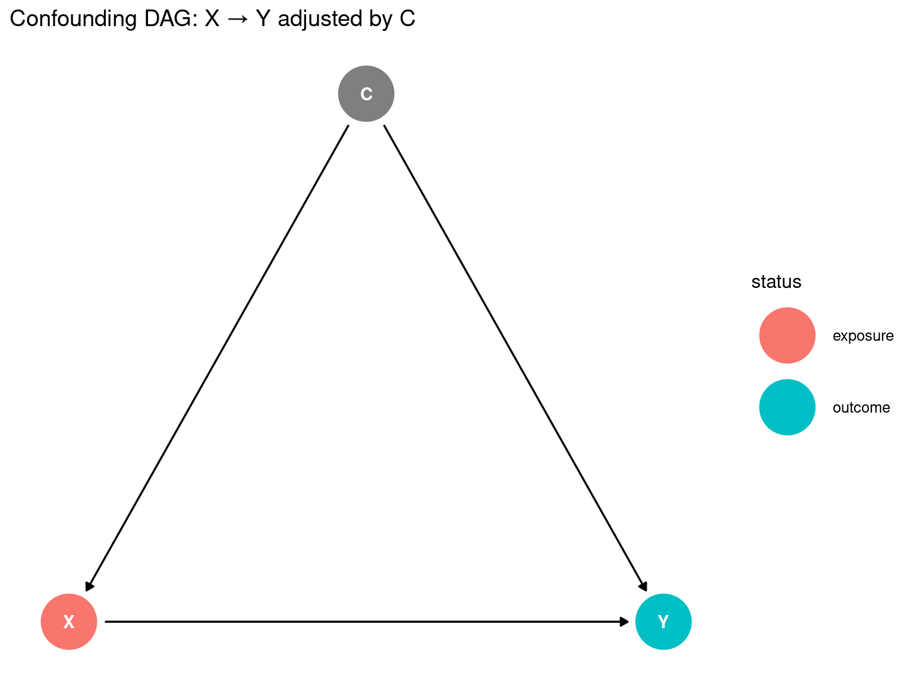
dagify() creates tidygraph objects that avoid some plotting issues entirely:
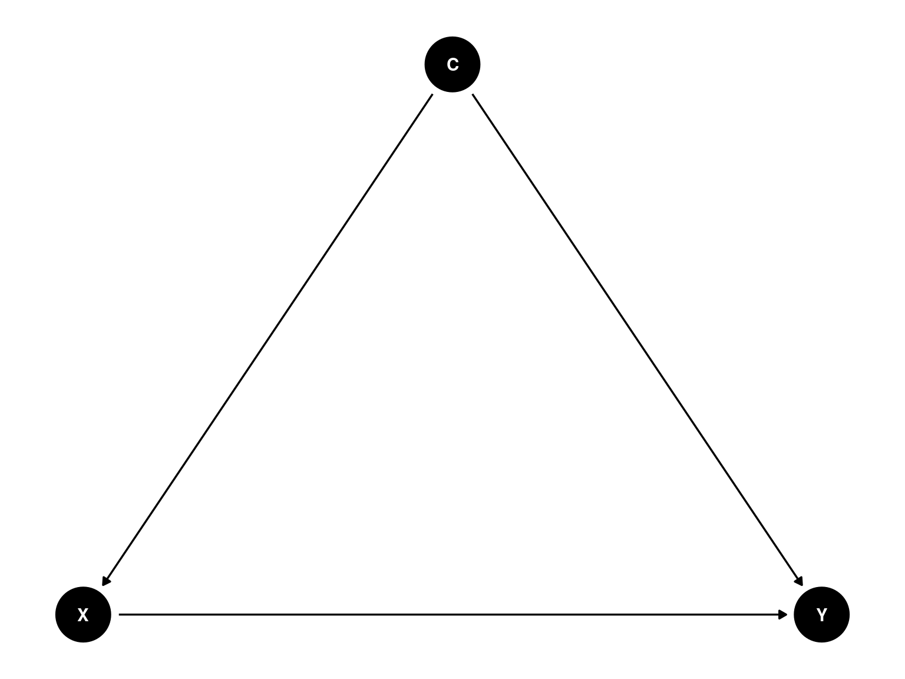
ggdag_status(dag_confound2) + theme_dag() # Color by role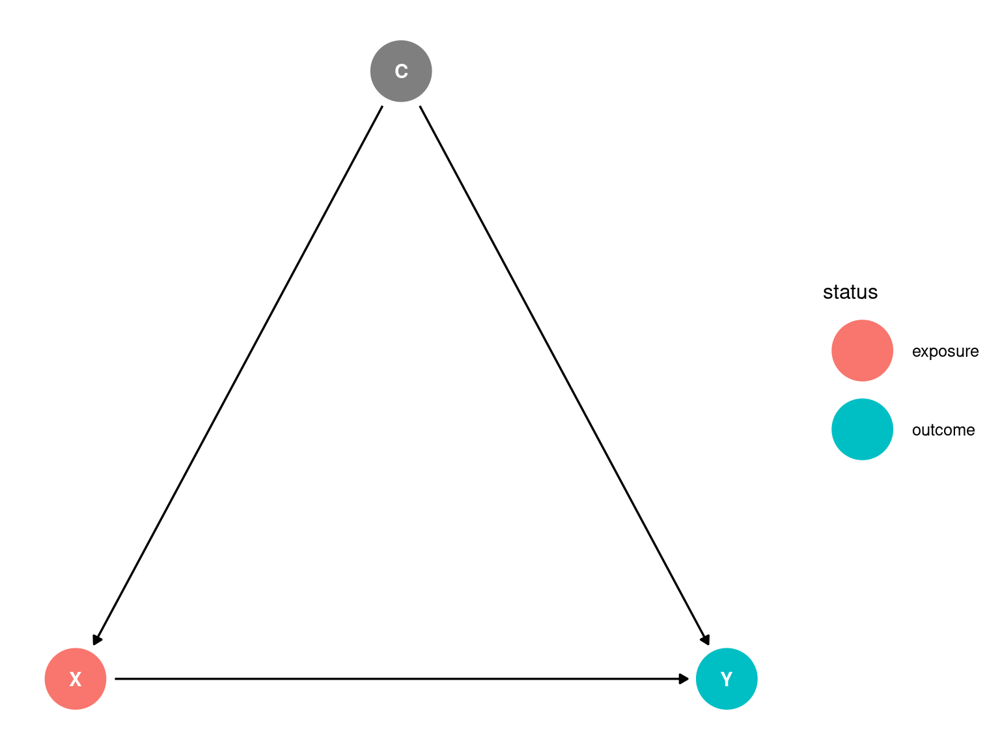
ggdag_collider(dag_confound2) + theme_dag() # Highlight colliders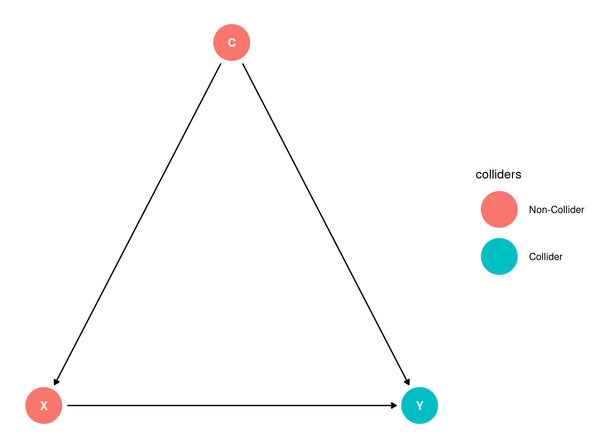
We can use dagitty functions to enumerate all paths from X to Y and identify the minimal adjustment set needed to block confounding.
# List all paths from X to Y
paths(dag_confound, from = "X", to = "Y")$paths
[1] "X -> Y" "X <- C -> Y"
$open
[1] TRUE TRUE# Find minimal adjustment sets
adjustmentSets(dag_confound, exposure = "X", outcome = "Y"){ C }We can simulate data consistent with the DAG structure to show how failing to adjust for C leads to biased estimates of the effect of X on Y.
set.seed(42)
n <- 5000
# Simulate data consistent with DAG
C <- rnorm(n, 50, 15) # SES (higher = wealthier)
X <- rnorm(n, 10 + 0.15*C, 3) # Pollution exposure
Y <- rbinom(n, 1, plogis(-4 + 0.3*X + 0.04*C)) # Asthma outcome
dat <- tibble(C, X, Y)
# Naive model (biased)
m_naive <- glm(Y ~ X, data = dat, family = binomial)
exp(coef(m_naive)["X"]) # OR ≈ 1.45 (overestimates true effect) X
1.476494 X
1.358715 Key lesson: Unadjusted model overestimates effect by 7% due to unblocked backdoor path
X ← C → Y.
The Berkson paradox demonstrates that study design choices can create associations where none exist. By conditioning on a **collider (hospitalization), we induce a spurious negative correlation between two independent causes (pollution and genetic risk). This isn’t a statistical artifact—it’s a fundamental property of probability when restricting to subsets defined by common effects. Golden rule: Always draw your selection mechanism in your DAG. If a variable has two arrows pointing into it (→ C ←), never condition on it or its descendants when estimating causal effects.
This principle is especially critical in environmental health research where satellite data quality filters, geocoding success rates, and biomonitoring detection limits all act as colliders that can silently distort exposure-outcome relationships.
X) and genetic asthma risk (G) interactS = 1)Imagine hospitalization requires sufficient respiratory insult. Two independent pathways can cause it:
| Patient | Pollution (X) | Genetic Risk (G) | Hospitalized? | Why? |
|---|---|---|---|---|
| A | High | Low | Yes | Pollution alone sufficient |
| B | Low | High | Yes | Genetics alone sufficient |
| C | Low | Low | No | Neither sufficient alone |
| D | High | High | Yes | Both contribute |
Now restrict to hospitalized patients (S = 1) → You observe only Patients A, B, D.
Let:
\(X, G \sim \mathcal{N}(0,1)\) independent in population
Hospitalization: \(S = \mathbb{I}(X + G > c)\) for threshold \(c\)
Population correlation: \(\text{Corr}(X, G) = 0\)
Conditional correlation given \(S=1\):
\[ \text{Corr}(X, G \mid S=1) = -\frac{1}{1 + \text{SNR}} < 0 \]
where SNR = signal-to-noise ratio of the selection mechanism. The stronger the selection threshold, the stronger the induced negative correlation.
Simulation proof (from earlier code): - Population correlation: ≈ 0.002 (independent) - Hospitalized sample correlation: ≈ -0.35 (strong negative association)
| Study Context | Collider | Spurious Association Created |
|---|---|---|
| Hospital-based case-control | Hospitalization status | Negative correlation between independent risk factors (Berkson’s original observation) |
| Online survey recruitment | Internet access + willingness to participate | Association between socioeconomic status and health behaviors |
| Missing data | Missingness indicator (if related to both X and Y) | Bias when using complete-case analysis |
| Stratification by outcome | Disease severity | Apparent “protective effect” of risk factors among severe cases |
| Matched case-control | Matching variable (if affected by exposure) | Bias when matching on variables affected by exposure |
| Step | Action |
|---|---|
| 1. Map selection mechanisms | Explicitly include selection nodes (S) in your DAG |
| 2. Identify colliders | Find all nodes with → C ← structure |
| 3. Never condition on colliders | Exclude from: • Regression adjustment • Matching • Stratification • Sample restriction |
| 4. Test for selection bias | Compare distributions of key variables in full vs. selected sample |
| 5. Use inverse probability weighting | Weight by inverse probability of selection to recover population representativeness |
| 6. Sensitivity analysis | Quantify how strong selection would need to be to explain observed associations |
This principle is especially critical in environmental health research where satellite data quality filters, geocoding success rates, and biomonitoring detection limits all act as colliders that can silently distort exposure-outcome relationships.
Scenario: Studying relationship between pollution (X) and genetic risk (G) for asthma in a hospital-based sample where selection (S) depends on both.
dag {
G [pos="2.000,0.000"]
S [pos="1.000,-1.000"]
X [pos="0.000,0.000"]
G -> S
X -> S
}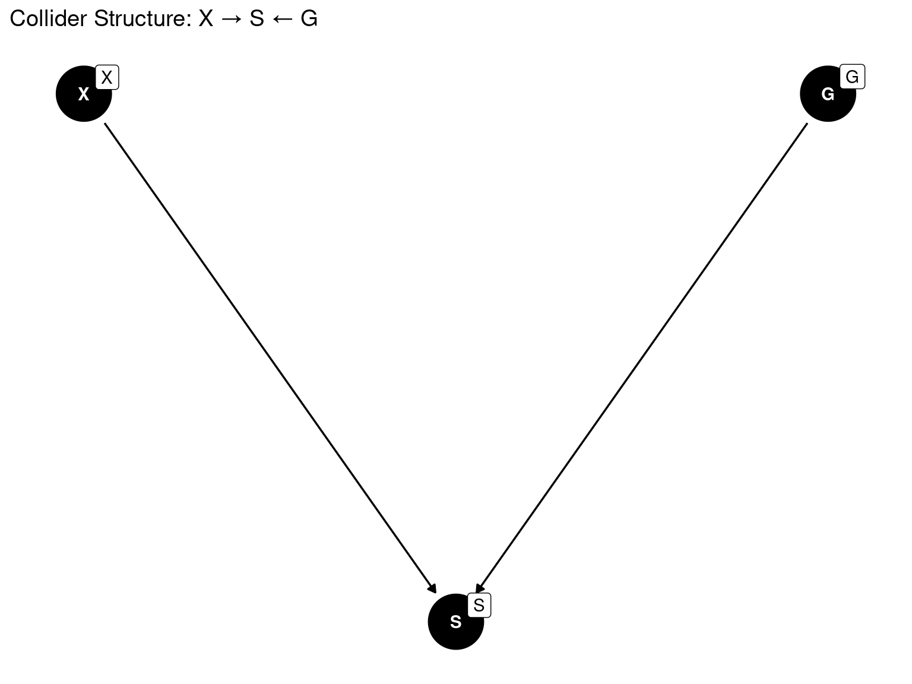
X → S: High pollution exposure increases hospitalization risk
G → S: High genetic risk increases hospitalization risk
No arrow between X and G: They are independent causes in the population
S is a collider (two arrows converge on it)
In the general population, pollution exposure and genetic risk are independent:
Where you live (pollution) doesn’t determine your genes
Genes don’t determine residential location (in this simplified model)
We can simulate data to show that conditioning on the collider S induces a spurious negative correlation between X and G, which are independent in the population.
set.seed(123)
n <- 10000
X_pop <- rnorm(n) # Pollution exposure
G_pop <- rnorm(n) # Genetic risk (independent of X)
S_pop <- as.numeric(abs(X_pop) + abs(G_pop) > 1.5) # Hospitalization threshold
# Population correlation (should be ~0)
cat("Population correlation (X,G):", round(cor(X_pop, G_pop), 3), "\n")Population correlation (X,G): 0.006 Hospitalized sample correlation (X,G): 0.007 ️ Critical insight: Conditioning on collider
Sinduces negative correlation between independent causes. Never adjust for colliders or their descendants!
We can create a scatter plot to visualize how the relationship between X and G changes when we restrict to the hospitalized sample.
library(ggplot2)
set.seed(123)
# Simulate population (X and G independent)
n <- 5000
X <- rnorm(n)
G <- rnorm(n)
# Selection: hospitalized if |X| + |G| > 1.5
S <- abs(X) + abs(G) > 1.5
df <- data.frame(X, G, Selected = ifelse(S, "Hospitalized", "General Population"))
# Plot both populations
ggplot(df, aes(x = X, y = G, color = Selected)) +
geom_point(alpha = 0.3, size = 0.8) +
stat_ellipse(level = 0.95, linetype = "dashed") +
geom_vline(xintercept = 0, linetype = "dotted") +
geom_hline(yintercept = 0, linetype = "dotted") +
labs(title = "Collider Bias: Independence in Population → Association in Selected Sample",
subtitle = "Among hospitalized patients (red), pollution and genetic risk appear negatively correlated",
x = "Pollution Exposure (X)",
y = "Genetic Risk (G)") +
theme_minimal() +
coord_equal()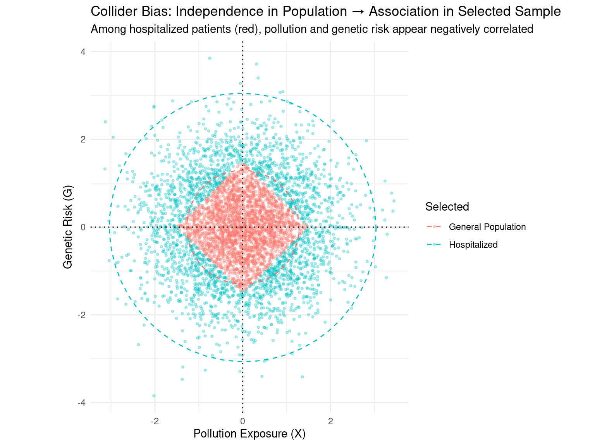
Variables: - X: Residential proximity to wildfires (exposure) - Y: Respiratory hospitalization (outcome) - C: Neighborhood greenness (confounder: affects both exposure & health) - M: Ambient PM₂.₅ (mediator: wildfire → PM₂.₅ → health) - S: Study participation (collider: depends on exposure & outcome severity) - U: Unmeasured stress (latent confounder)
library(dagitty)
dag_realistic <- dagitty('
dag {
U [unobserved,pos="1,2"]
C [pos="0,1"]
X [exposure,pos="0,0"]
M [pos="1,0"]
Y [outcome,pos="2,0"]
S [pos="1,-1"]
U -> X
U -> Y
C -> X
C -> Y
X -> M
M -> Y
X -> Y
X -> S
Y -> S
}
')
ggdag_status(tidy_dagitty(dag_realistic)) +
theme_dag() +
ggtitle("Realistic DAG: Wildfire Exposure → Respiratory Health")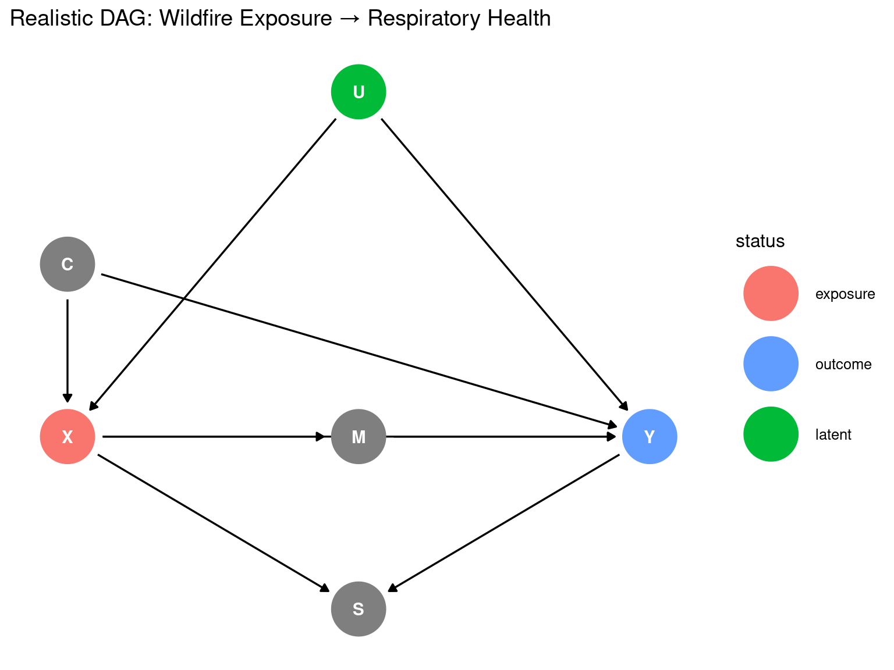
library(ggdag)
dag_realistic <- dagify(
# Structural equations (comments allowed OUTSIDE function)
Y ~ X + M + C + U,
M ~ X,
X ~ C + U,
S ~ X + Y,
# Node roles
exposure = "X",
outcome = "Y",
latent = "U", # Unobserved confounder
# Coordinates for plotting
coords = list(
x = c(U = 1, C = 0, X = 0, M = 1, Y = 2, S = 1),
y = c(U = 2, C = 1, X = 0, M = 0, Y = 0, S = -1)
)
)
ggdag_status(tidy_dagitty(dag_realistic)) +
theme_dag() +
ggtitle("Realistic DAG: Wildfire Exposure → Respiratory Health")
Path analysis helps identify all causal and non-causal paths from X to Y, guiding adjustment decisions.
# Enumerate all paths from X to Y
paths(dag_realistic, from = "X", to = "Y")$paths[1] "X -> M -> Y" "X -> S <- Y" "X -> Y" "X <- C -> Y" "X <- U -> Y"# Minimal adjustment sets for TOTAL effect
adjustmentSets(dag_realistic, exposure = "X", outcome = "Y", type = "minimal")
# Verify: Does conditioning on C block backdoor paths?
dseparated(dag_realistic, "X", "Y", "C") # FALSE → unmeasured U prevents full blocking![1] FALSE# Critical check: What happens if we condition on collider S?
dseparated(dag_realistic, "X", "Y", "S") # FALSE → opens spurious path![1] FALSEQuantify bias in estimating the effect of wildfire proximity (X) on respiratory hospitalization (Y) under various adjustment strategies:
set.seed(2026)
n <- 20000
# Simulate data (U unobserved in analysis)
U <- rnorm(n, 0, 1) # Unmeasured stress
C <- rnorm(n, 50, 15) # Greenness index
X <- rnorm(n, 30 + 0.2*C + 0.8*U, 5) # Wildfire proximity
M <- rnorm(n, 15 + 0.6*X, 3) # PM2.5
Y_prob <- plogis(-5 + 0.08*X + 0.12*M + 0.03*C + 0.4*U)
Y <- rbinom(n, 1, Y_prob)
S <- rbinom(n, 1, plogis(-3 + 0.15*X + 1.2*Y)) # Selection bias
dat <- tibble(X, M, C, Y, S)
# Strategy 1: Naive (no adjustment) → biased by C and U
m1 <- glm(Y ~ X, data = dat, family = binomial)
# Strategy 2: Adjust for C only (DAG-recommended) → reduces but doesn't eliminate bias (U remains)
m2 <- glm(Y ~ X + C, data = dat, family = binomial)
# Strategy 3: Adjust for C + M (overadjustment) → blocks mediated effect
m3 <- glm(Y ~ X + C + M, data = dat, family = binomial)
# Strategy 4: Adjust for C + S (collider bias!) → worst performance
m4 <- glm(Y ~ X + C + S, data = dat, family = binomial)
# Compare log-odds ratios for X
bind_rows(
tibble(Model = "Naive", logOR = coef(m1)["X"], Bias_Source = "Confounding (C,U)"),
tibble(Model = "Adjust C", logOR = coef(m2)["X"], Bias_Source = "Residual confounding (U)"),
tibble(Model = "Adjust C+M", logOR = coef(m3)["X"], Bias_Source = "Overadjustment (blocks M)"),
tibble(Model = "Adjust C+S", logOR = coef(m4)["X"], Bias_Source = "Collider bias (S)")
) %>%
mutate(True_Effect = 0.08) %>% # True direct + indirect effect
ggplot(aes(x = Model, y = logOR, fill = Bias_Source)) +
geom_col() +
geom_hline(yintercept = 0.08, linetype = "dashed", color = "red") +
labs(title = "Bias Under Different Adjustment Strategies",
y = "Log-Odds Ratio for Wildfire Proximity (X)",
caption = "Red line: true total effect (0.08). Adjusting for C reduces bias but cannot eliminate unmeasured confounding (U).") +
theme_minimal()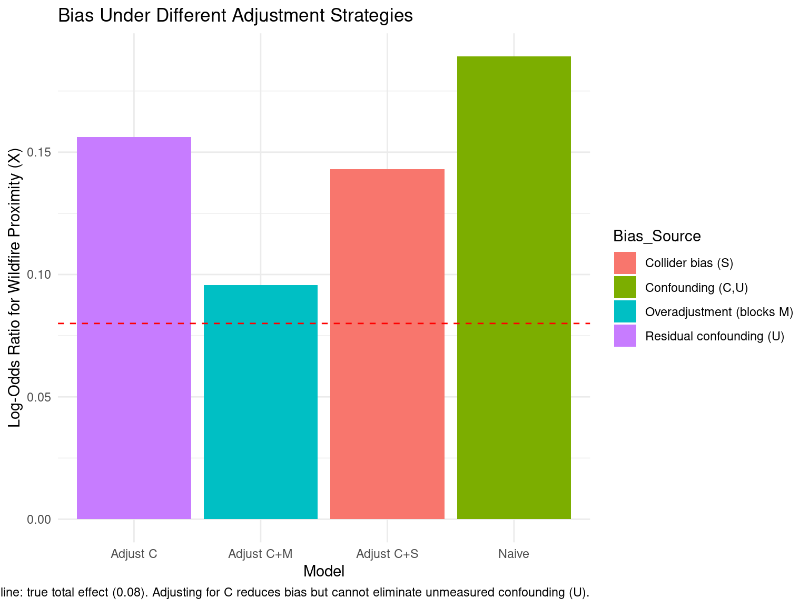
Interpretation:
- Adjusting forCreduces bias but cannot eliminate it due to unmeasuredU
- Adjusting for mediatorMunderestimates total effect (estimates direct effect only)
- Adjusting for colliderScreates severe bias (worst strategy)
Let’s say we’re looking at the relationship between smoking and cardiac arrest. We might assume that smoking causes changes in cholesterol, which causes cardiac arrest:
smoking_ca_dag <- dagify(cardiacarrest ~ cholesterol,
cholesterol ~ smoking + weight,
smoking ~ unhealthy,
weight ~ unhealthy,
labels = c(
"cardiacarrest" = "Cardiac\n Arrest",
"smoking" = "Smoking",
"cholesterol" = "Cholesterol",
"unhealthy" = "Unhealthy\n Lifestyle",
"weight" = "Weight"
),
latent = "unhealthy",
exposure = "smoking",
outcome = "cardiacarrest"
)
# vizualize
ggdag(smoking_ca_dag, text = FALSE, use_labels = "label")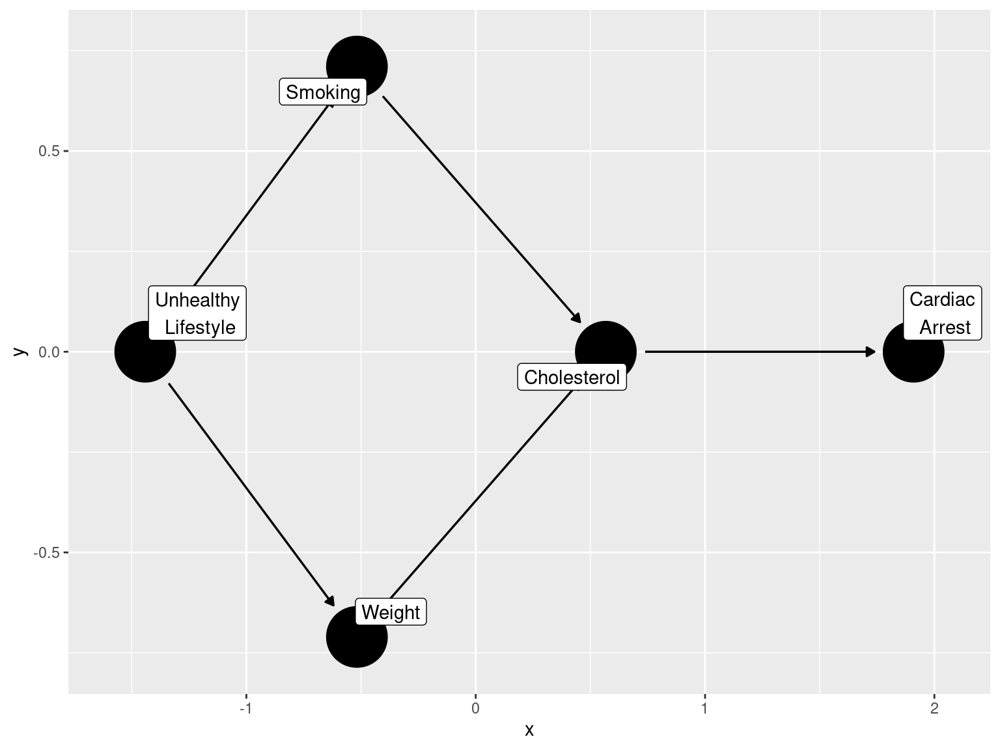
Smoking increases cholesterol, which raises the risk of cardiac arrest. Cholesterol links smoking and cardiac arrest in a chain. Weight also raises cholesterol and cardiac arrest risk, adding another indirect link from weight to cardiac arrest.
People who smoke often have other unhealthy habits like overeating. In diagrams, this is shown as an ‘unhealthy lifestyle’ node, which causes both smoking and weight gain. This links smoking and weight through a fork, not a chain.
Forks and chains are two of the three main types of paths in these diagrams:
An inverted fork is when two arrowheads meet at a node, which we’ll discuss shortly.
Nodes can be parents, children, ancestors, or descendants. Smoking and weight are parents of cholesterol and children of an unhealthy lifestyle. Cardiac arrest is a descendant of an unhealthy lifestyle.
When studying if smoking causes cardiac arrest, we focus on the direct path. Indirect or back-door paths cause confounding. Judea Pearl compares confounding to water in a pipe: it flows through open paths and must be blocked somewhere.
Chains and forks are both open pathways. In a DAG where nothing is conditioned on, any back-door path will be either a chain or a fork. Besides the direct path to cardiac arrest, there is also an open back-door path that goes through the fork at unhealthy lifestyle, then continues through the chain to cardiac arrest.
ggdag_paths(smoking_ca_dag, text = FALSE, use_labels = "label", shadow = TRUE)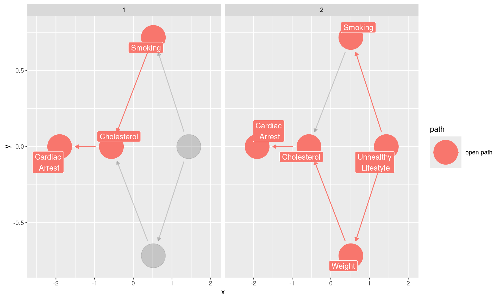
DAGs transform causal inference from a statistical exercise into a structured reasoning process:
EValue (sensitivity analysis), pcalg (causal discovery), tidySEM (structural equation modeling)Would you like a domain-specific DAG tutorial for your pyrogenic carbon prediction work? I can develop a tailored example incorporating spatial confounders, remote sensing proxies, and biomass mediation pathways.